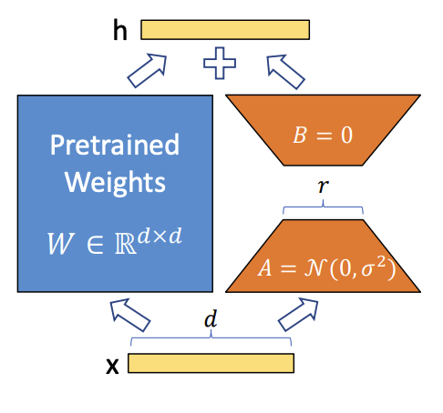

Tutorial 2: Finetuning Bert for Sequence Classification using a LoRA adapter#
When we import a pretrained transformer model from HuggingFace, we receive encoder weights that are not directly optimized for our downstream task. For sequence classification, we add a classifier head and fine-tune. In this tutorial, we compare two approaches on IMDb sentiment classification:
Full Supervised Fine-Tuning (SFT)
Parameter Efficient Fine-Tuning (PEFT) with LoRA
Run this tutorial#
From the repository root:
uv run python docs/source/modules/documentation/tutorials/tutorial_2_lora_finetune.py
Expected terminal output (excerpt)#
A successful run should include output similar to:
============================================================
Tutorial 2: LoRA Finetuning on BERT (IMDb)
============================================================
[1/7] Loading and tokenizing IMDb dataset...
Dataset loaded: 25000 train / 25000 test
[2/7] Loading model and building MaseGraph...
MaseGraph ready ✓
[3/7] Reporting trainable parameters (full model)...
Trainable after freezing embeddings: 413,314
[4/7] Evaluating baseline accuracy (before training)...
[Baseline] Accuracy: 0.4923
[5/7] Running full SFT (1 epoch)...
[SFT] Accuracy after 1 epoch: 0.8193
SFT checkpoint saved to .../tutorial_2_sft
[6/7] Injecting LoRA adapter and training (1 epoch)...
Trainable params with LoRA: 440,844
[LoRA] Accuracy after training: 0.8350
[7/7] Fusing LoRA weights and exporting...
[LoRA fused] Accuracy: 0.8350
LoRA checkpoint saved to .../tutorial_2_lora
============================================================
Tutorial 2 complete!
============================================================
Note
During metadata initialization and training, some environments print long tensor dumps and warnings.
This does not indicate failure as long as the script reaches Tutorial 2 complete!.
Raw output examples from a real run#
The following snippets are copied from a real terminal run log.
Trainable-parameter report excerpt:
+-------------------------------------------------+------------------------+
| Submodule | Trainable Parameters |
+=================================================+========================+
| bert | 4385920 |
+-------------------------------------------------+------------------------+
| bert.embeddings | 3972864 |
+-------------------------------------------------+------------------------+
| bert.embeddings.word_embeddings | 3906816 |
+-------------------------------------------------+------------------------+
| bert.embeddings.token_type_embeddings | ... |
+-------------------------------------------------+------------------------+
Tensor dump excerpt (truncated):
tensor([[[[1, 1, 1, 1, 1, 1, 1, 1, 1, 1],
[1, 1, 1, 1, 1, 1, 1, 1, 1, 1],
[1, 1, 1, 1, 1, 1, 1, 1, 1, 1],
[1, 1, 1, 1, 1, 1, 1, 1, 1, 1],
... ]]]])
Sentiment Analysis with the IMDb Dataset#
The IMDb dataset (50k reviews, binary labels) is a standard sentiment-analysis benchmark. A positive review example from the dataset:
I turned over to this film in the middle of the night and very nearly skipped right passed it. It was only because there was nothing else on that I decided to watch it. In the end, I thought it was great. An interesting storyline, good characters, a clever script and brilliant directing makes this a fine film to sit down and watch.
Step 1: Load dataset and tokenizer#
print("\n[1/7] Loading and tokenizing IMDb dataset...", flush=True)
from chop.tools import get_tokenized_dataset, get_trainer
dataset, tokenizer = get_tokenized_dataset(
dataset=dataset_name,
checkpoint=tokenizer_checkpoint,
return_tokenizer=True,
)
print(f" Dataset loaded: {len(dataset['train'])} train / {len(dataset['test'])} test", flush=True)
Generate a MaseGraph with Custom Arguments#
For HuggingFace models, the MaseGraph tracer can be driven with explicit hf_input_names.
In this tutorial we trace with input_ids, attention_mask and labels. Including labels
ensures the loss path is part of the traced graph.
Step 2: Build MaseGraph#
print("\n[2/7] Loading model and building MaseGraph...", flush=True)
from transformers import AutoModelForSequenceClassification
import chop.passes as passes
from chop import MaseGraph
model = AutoModelForSequenceClassification.from_pretrained(checkpoint)
model.config.problem_type = "single_label_classification"
mg = MaseGraph(
model,
hf_input_names=["input_ids", "attention_mask", "labels"],
)
mg, _ = passes.init_metadata_analysis_pass(mg)
mg, _ = passes.add_common_metadata_analysis_pass(mg)
print(" MaseGraph ready ✓", flush=True)
Task: Remove attention_mask and labels from hf_input_names, regenerate the graph,
and compare topology differences. Explain why the graph changes.
Full Supervised Finetuning (SFT)#
Before training, inspect trainable parameter distribution. Most trainable parameters are in embeddings, so we freeze embedding parameters before the main comparison.
Step 3: Report trainable parameters#
print("\n[3/7] Reporting trainable parameters (full model)...", flush=True)
from chop.passes.module import report_trainable_parameters_analysis_pass
_, _ = report_trainable_parameters_analysis_pass(mg.model)
# Freeze embeddings
for param in mg.model.bert.embeddings.parameters():
param.requires_grad = False
trainable = sum(p.numel() for p in mg.model.parameters() if p.requires_grad)
print(f" Trainable after freezing embeddings: {trainable:,}", flush=True)
Before fine-tuning, accuracy is close to random guessing for a binary dataset (around 50%).
Step 4: Baseline evaluation#
print("\n[4/7] Evaluating baseline accuracy (before training)...", flush=True)
trainer = get_trainer(
model=mg.model,
tokenized_dataset=dataset,
tokenizer=tokenizer,
evaluate_metric="accuracy",
)
eval_results = trainer.evaluate()
print(f" [Baseline] Accuracy: {eval_results['eval_accuracy']:.4f}", flush=True)
Step 5: Run one epoch of full SFT#
print("\n[5/7] Running full SFT (1 epoch)...", flush=True)
trainer.train()
eval_results = trainer.evaluate()
print(f" [SFT] Accuracy after 1 epoch: {eval_results['eval_accuracy']:.4f}", flush=True)
mg.export(f"{Path.home()}/tutorial_2_sft")
print(f" SFT checkpoint saved to {Path.home()}/tutorial_2_sft", flush=True)
Parameter Efficient Finetuning (PEFT) with LoRA#
LoRA uses low-rank matrices A and B to adapt pretrained weights while freezing most original parameters.
This reduces trainable parameter count and memory footprint while retaining strong task performance.
{kind=link}

LoRA adapter structure.#
Step 6: Inject LoRA adapter and train#
print("\n[6/7] Injecting LoRA adapter and training (1 epoch)...", flush=True)
mg, _ = passes.insert_lora_adapter_transform_pass(
mg,
pass_args={"rank": 6, "alpha": 1.0, "dropout": 0.5},
)
trainable_lora = sum(p.numel() for p in mg.model.parameters() if p.requires_grad)
print(f" Trainable params with LoRA: {trainable_lora:,}", flush=True)
trainer = get_trainer(
model=mg.model,
tokenized_dataset=dataset,
tokenizer=tokenizer,
evaluate_metric="accuracy",
num_train_epochs=1,
)
trainer.train()
eval_results = trainer.evaluate()
print(f" [LoRA] Accuracy after training: {eval_results['eval_accuracy']:.4f}", flush=True)
After LoRA training, we fuse adapter weights back into linear layers for inference efficiency.
Step 7: Fuse LoRA weights and export#
print("\n[7/7] Fusing LoRA weights and exporting...", flush=True)
mg, _ = passes.fuse_lora_weights_transform_pass(mg)
eval_results = trainer.evaluate()
print(f" [LoRA fused] Accuracy: {eval_results['eval_accuracy']:.4f}", flush=True)
mg.export(f"{Path.home()}/tutorial_2_lora")
print(f" LoRA checkpoint saved to {Path.home()}/tutorial_2_lora", flush=True)
print("\n" + "=" * 60, flush=True)
print("Tutorial 2 complete!", flush=True)
print("=" * 60, flush=True)
Conclusion#
Tutorial 2 demonstrates the trade-off between full SFT and LoRA-based PEFT:
Full SFT gives a strong improvement over baseline.
LoRA reaches comparable or better accuracy with far fewer effective trainable updates.
Both SFT and LoRA checkpoints are exported for follow-up tutorials.